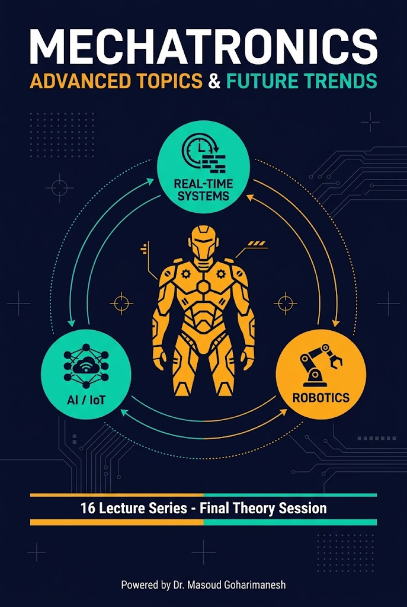
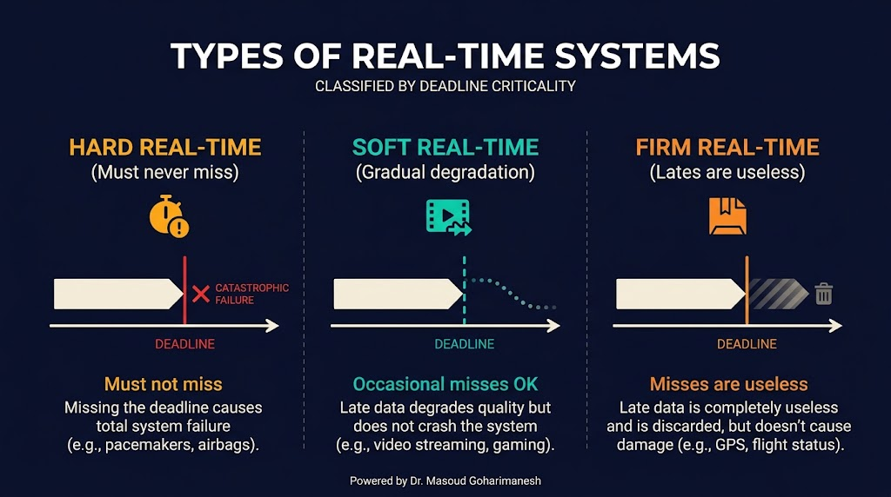
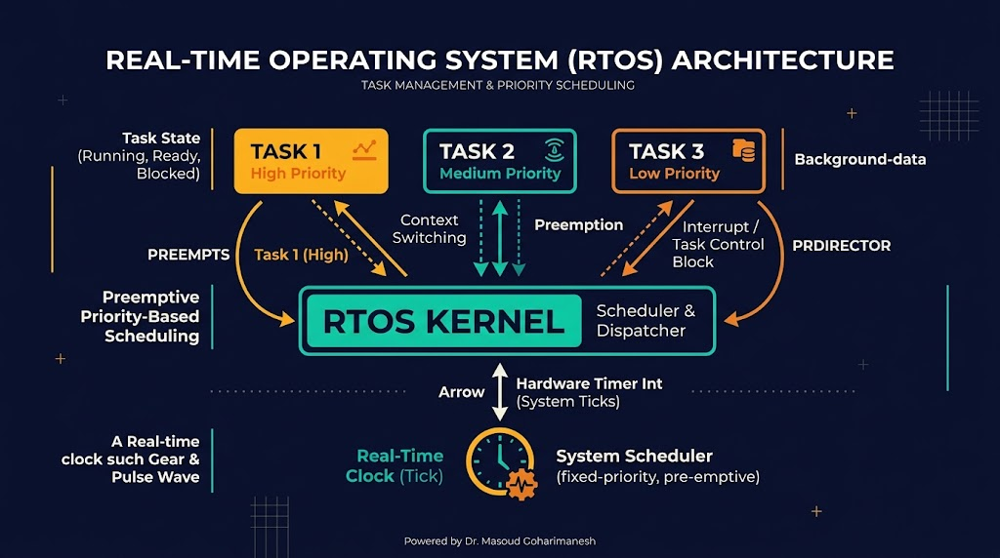
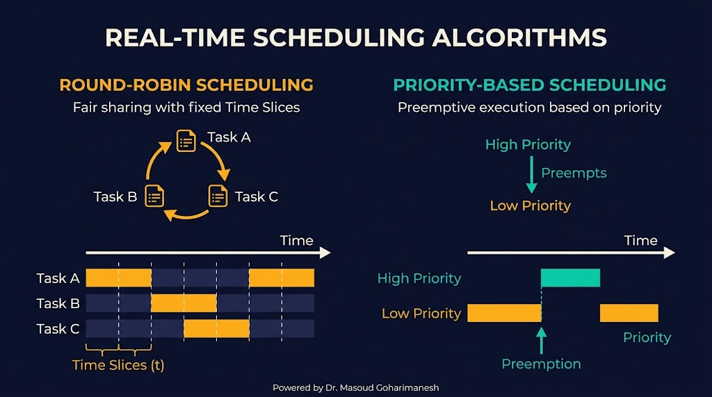
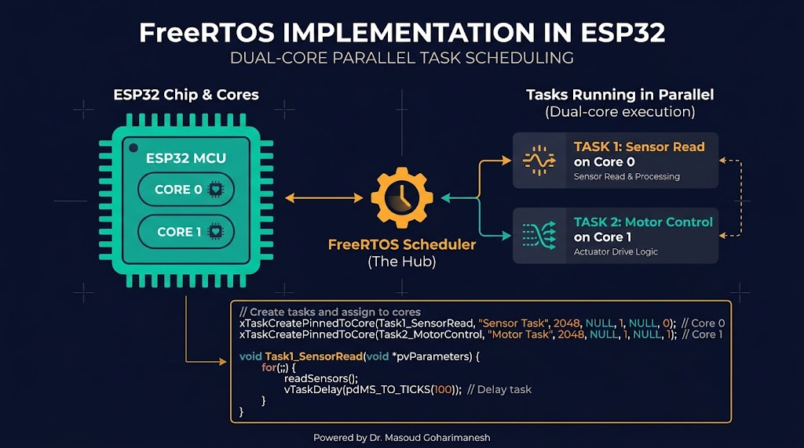
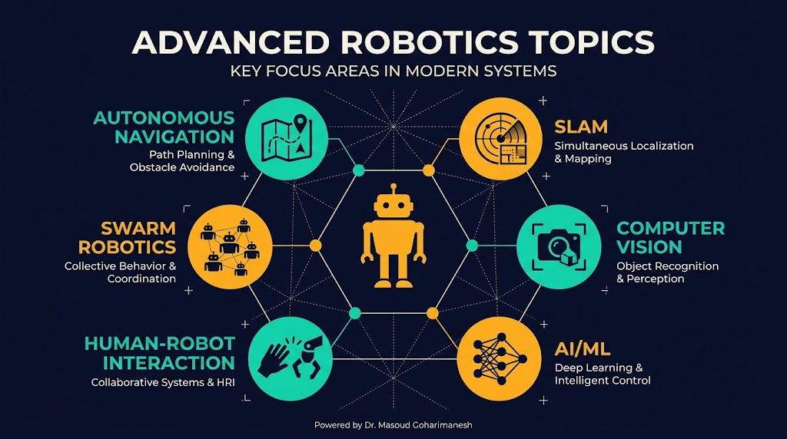
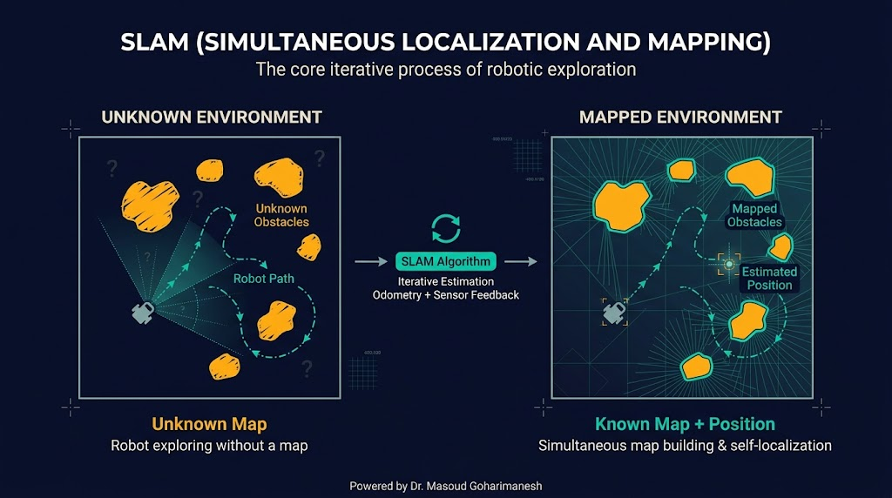
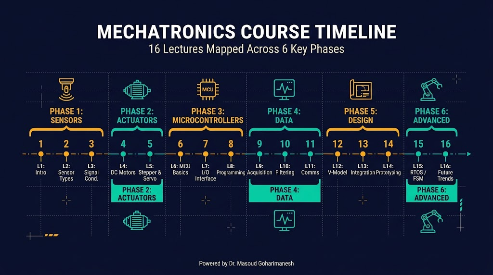

سیستمهای زمان واقعی، روباتیک پیشرفته، مرور
دکتر مسعود گوهریمنش
دانشیار گروه مهندسی مکانیک
دانشگاه تربت حیدریه | پاییز ۱۴۰۵
آخرین جلسه تئوری — جلسه ۱۶ از ۱۶!
یک ربات خودران، در هر ثانیه میلیونها محاسبه انجام میدهد — اما همه باید در زمان مشخص تمام شوند!
چگونه میتوان چندین کار را در یک میکروکنترلر بهطور همزمان و با تضمین زمانبندی انجام داد؟
Real-Time Systems — پاسخ در زمان مشخص
سیستم زمان واقعی سیستمی است که در آن، صحت عملکرد نهتنها به نتیجه محاسبات، بلکه به زمان تحویل نتیجه نیز بستگی دارد. یعنی پاسخ باید در یک محدوده زمانی مشخص (Deadline) ارائه شود.
از دست دادن مهلت = فاجعه — ترمز ABS
از دست دادن مهلت = نتیجه بیارزش — ویدیو استریم
از دست دادن مهلت = کیفیت پایینتر — رابط کاربری
Hard، Firm، Soft

| ویژگی | Hard | Firm | Soft |
|---|---|---|---|
| پیامد تأخیر | فاجعهبار | بیارزش | کیفیت پایینتر |
| مثال | ترمز، ایربگ | ویدیو، بازی | UI، لاگ |
| تضمین | قطعاً | معمولاً | تلاش میشود |
| هزینه | بسیار بالا | متوسط | پایین |
چندین کار بهظاهر همزمان

الگوریتمهای زمانبندی

پرکاربردترین RTOS متنباز

void taskSensor(void *pvParameters) {
while(1) {
int val = analogRead(A0);
Serial.println(val);
vTaskDelay(100 / portTICK_PERIOD_MS);
}
}
void setup() {
Serial.begin(115200);
xTaskCreatePinnedToCore(
taskSensor, "Sensor", 2048, NULL, 1, NULL, 0
);
}
void loop() {
// Task اصلی
vTaskDelay(1000 / portTICK_PERIOD_MS);
}
فراتر از رباتهای ساده

SLAM، Path Planning
تشخیص اشیا، Deep Learning
همکاری چند ربات
سطوح خودمختاری
نمونه صنعتی: رباتهای AMR (Autonomous Mobile Robot) در انبارها در سطح ۴ کار میکنند — خودشان مسیر را پیدا میکنند و از موانع عبور میکنند.
Simultaneous Localization and Mapping

ربات باید همزمان دو کار انجام دهد: (۱) نقشه محیط را بسازد، (۲) موقعیت خودش را در آن نقشه تعیین کند. این دو به هم وابستهاند — مثل «مرغ و تخممرغ».
مسیریابی هوشمند
الگوریتم جستجوی بهترین مسیر با heuristic. سریع و کارآمد برای شبکههای بزرگ.
جستجوی جامع — همیشه کوتاهترین مسیر را پیدا میکند اما کندتر از A*.
Rapidly-exploring Random Tree — مناسب محیطهای پیچیده با موانع نامنظم.
مقایسه: A* برای نقشههای شبکهای، Dijkstra برای گرافهای کوچک، RRT برای فضای پیوسته با موانع.
مسیری که طی کردیم

شما اکنون پایه محکمی از مکاترونیک دارید — آماده پروژه!
فرصتهای پیش رو
یادگیری عمیق، بینایی ماشین، تصمیمگیری
رباتهای متصل، دادههای ابری
کارخانههای هوشمند، دوقلوی دیجیتال
Cobot، همکاری انسان و ربات
جراحی دقیق، توانبخشی
برداشت خودکار، پایش مزارع
زمانبندی RTOS با اولویت
اجرای Taskها با اولویتهای مختلف را مشاهده کنید.
جلسه شانزدهم - مباحث پیشرفته
جلسه ۱۶ از ۱۶ — تبریک!
دکتر مسعود گوهریمنش
دانشیار گروه مهندسی مکانیک
دانشگاه تربت حیدریه | پاییز ۱۴۰۵
جلسه بعد: آشنایی با تجهیزات و ابزارهای آزمایشگاهی (شروع بخش عملی)
Powered by Dr. Masoud Goharimanesh